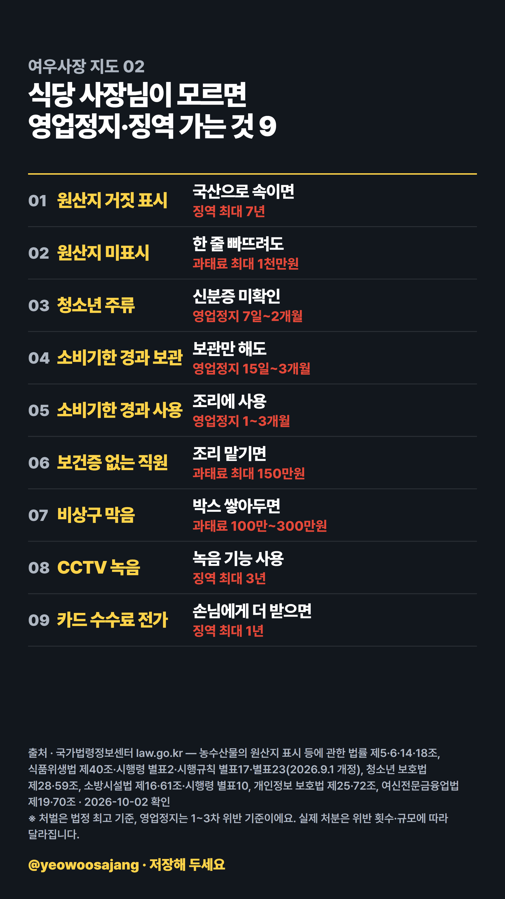

여우사장 지도 02
식당 사장님이 모르면 영업정지·징역 가는 것 9
길게 눌러 저장하거나 아래 버튼으로 원본(2160×3840)을 받으세요.
고화질 지도 받기
매일 하나씩, 모르면 과태료 나는 것 정리합니다. 인스타 @yeowoosajang
처벌은 법정 최고 기준, 영업정지는 1~3차 위반 기준입니다. 출처: 국가법령정보센터(law.go.kr), 2026-10-02 확인.여우사장 지도 02
길게 눌러 저장하거나 아래 버튼으로 원본(2160×3840)을 받으세요.
고화질 지도 받기
매일 하나씩, 모르면 과태료 나는 것 정리합니다. 인스타 @yeowoosajang
처벌은 법정 최고 기준, 영업정지는 1~3차 위반 기준입니다. 출처: 국가법령정보센터(law.go.kr), 2026-10-02 확인.